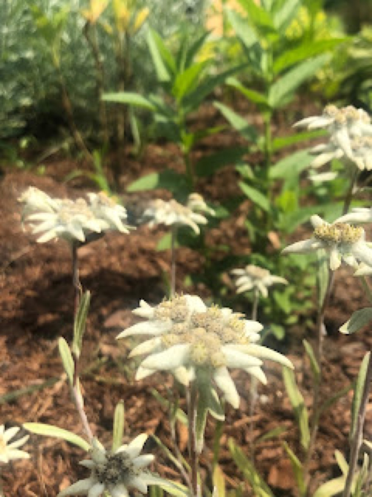
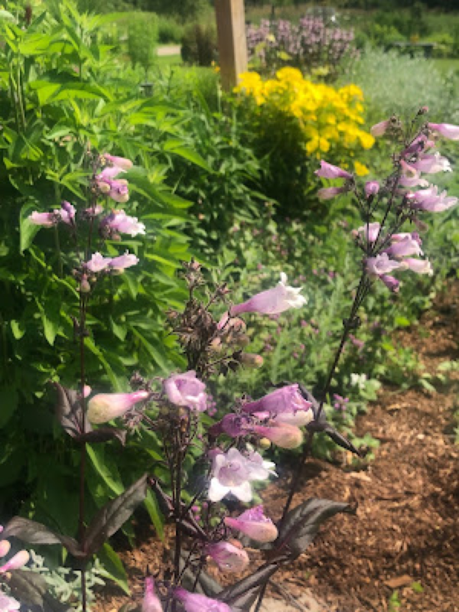

Early Summer 2019
Early Summer 2019 Blooms
The temperatures and humidity are rising as the summer gets into full swing. Coneflower, hosta, beardtongue, daylily, and catmint are all in full bloom. Zinnia seeds and sunflowers (both self-sown and planted) are quickly developing leaves and getting taller— an encouraging sign for fall blooms. The vegetable garden is also doing quite well— daily harvests of broccolini and endless amount of lettuce makes dinner preparation easy!
This time of year in the garden makes me curious about what is to come for the remainder of the season. I always wonder— did I plant enough blooms for mid-summer interest? Will there be enough flowers for the pollinators come August? I start looking for the absence of certain colors, shapes and textures and make notes about which plants need to be divided and placed in garden beds where a variety of blooms is lacking or empty space is noted. This is also the perfect time of year to think about kill-mulching for fall transplants.


Filed in the garden journal · Early Summer 2019